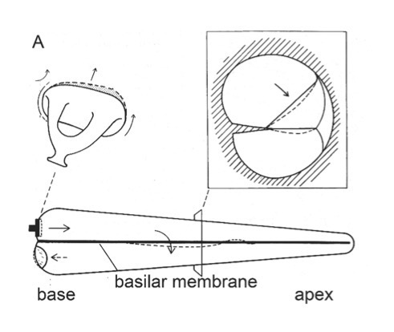
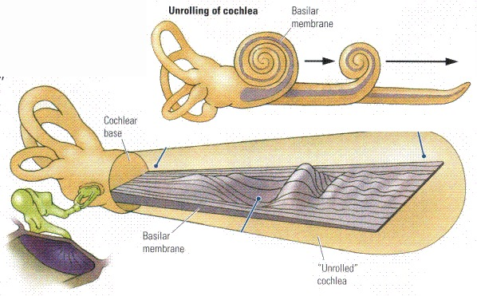
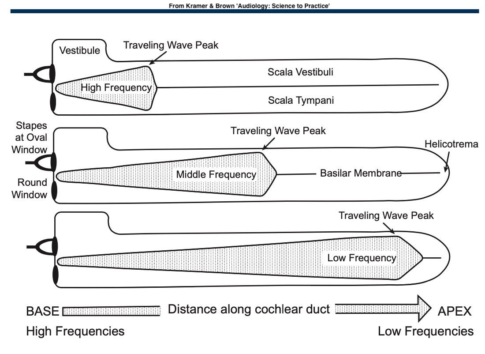
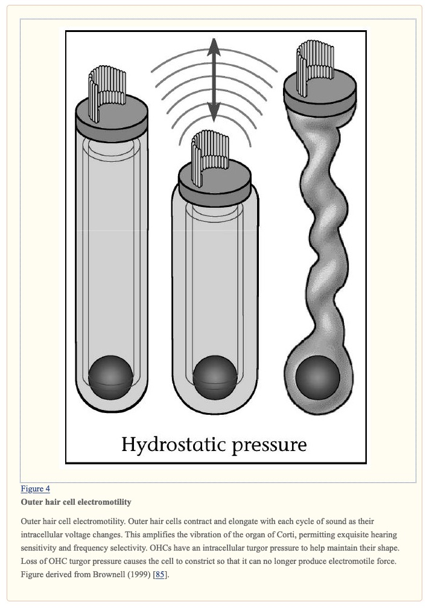
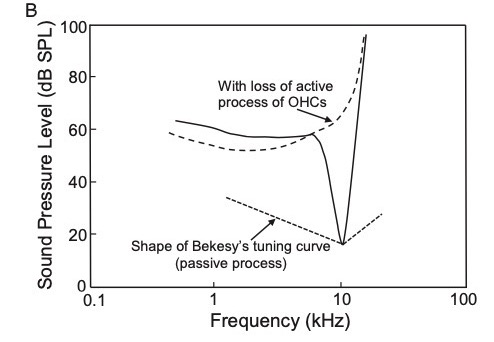

# The Physiology of the Cochlea and OHCs Will Styler - LIGN 113 --- ### Today's Plan - The Traveling Wave - Frequency Tuning - The Cochlear Amplifier - Otoacoustic Emissions --- ### Sound comes into the outer ear, and hits the TM <img class="r-stretch" src="hearing/middleear_netter.jpg"> --- ### The Middle ear turns the air pressure into mechanical vibration <img class="r-stretch" src="hearing/middleear_netter.jpg"> --- ### The stapes creates hydromechanical motion within the cochlea  --- ### These movements cause perturbations to the basilar membrane! - The basilar membrane deforms predictably  --- ### Fluid is incompressible! - Try and squeeze a coke can - The wave doesn't 'go from the oval window to the round window' - You're not producing surfable waves inside the cochlea - All of this is *instantaneous* - (For all practical purposes) --- ### It's all about pressure differences - Input at oval window creates a pressure difference between scala tympani and vestibuli - The basilar membrane deforms accordingly - Reissner's too, but that doesn't matter as much! - ... and the pattern of deformation changes depending on the input frequencies - This deformation is referred to as... --- ## The Traveling Wave --- ### Sound input to the cochlea generates a 'traveling wave' --- ### The 'Traveling wave' is a very poor term - It means that the wave 'travels' along the BM depending on frequency - Not that it's 'traveling' directly, except in the 'speed of sound in fluid' sense - Don't give me 'wave moves from the stapes towards the apex of the cochlea' arguments please! --- ### Basilar membrane deformation is based on frequency - Different frequencies cause deformation at different parts of the BM - Due to differences in stiffness of the BM  --- ### The Helicotrema removes the pressure differential in low frequencies - Sounds under around 20 Hz are inaudible --- ### We don't want super low frequencies - Chewing - Head movement - Your pulse, constantly - Room-sized resonances - Open only one window in your car at highway speed --- ### The traveling wave gives us 'tonotopic organization' - Each location along the BM has a different 'characteristic frequency' <img class="r-stretch" src="hearing/basilar_tonotopic.jpg"> --- ### Aside: Bone Conduction causes hearing too! - The traveling wave doesn't require sound to come in through the stapes/oval window - Anything that introduces hydromechanical movement into the bony labyrinth - This is how we diagnose conductive vs. cochlear loss --- <img class="r-stretch" src="hearing/aud_boneconduction.jpg"> --- <img class="r-stretch" src="hearing/middle_ear_implant3.jpg"> --- ### So, frequencies come in - ... and different parts of the BM are excited depending on the frequencies --- ### This is where we stopped last time! - ... but it's not quite the whole story --- ## Cochlear Frequency Tuning --- ### There are two kinds of frequency tuning mechanisms in the cochlea - **Passive Mechanism**: Different frequencies affect different parts of the BM - This is what we already know about! - **Active Mechanism**: Outer Hair Cells *actively assist* in tuning BM vibration --- ### OHCs form the 'Cochlear Amplifier' - They make quiet sounds seem louder to the IHCs - ... but they also help with frequency tuning! --- ### OHCs can move to help hearing! <img class="r-stretch" src="hearing/corti_crosssection.jpg"> ---  --- ### This is partially directly triggered by movement - When the stereocilia bend, the intracellular potential changes - More on this next time - This triggers them to contract - Movement causes more movement --- ### There's also some higher-level processing - We can both increase and decrease the cochlear amplifier some - Possibly to reduce damage and background noise <img class="r-stretch" src="hearing/hair_innervation.jpg"> --- ### That's as deep as we're getting into it - OHCs are pretty neat, but their physiology isn't as well understood - [Here's a pretty good detailed source](https://www.ncbi.nlm.nih.gov/pmc/articles/PMC1315292/) --- ### Active Frequency Tuning - The cochlear amplifier sharpens our frequency perception! --- <img class="r-stretch" src="hearing/tuning_curvesa.jpg"> ---  --- ### OHC damage or death reduces frequency specificity - Inability to discriminate frequency differences well - You end up with a 'smeared' spectrum - The 'spectral envelope' becomes more important than the peaks --- <img class="r-stretch" src="phonmedia/noisefft.jpg"> --- <img class="r-stretch" src="phonmedia/noisespectrogram.jpg"> --- ### Loss of frequency specificity is coupled with the loss of amplification - So the hearing left is quiet **and** blurry - **Be kind to your OHCs!** --- ### How does frequency specificity work? > "The relative contributions of the passive and the active properties of the organ of Corti in defining the tonotopic frequency map of the cochlea are poorly understood. In nonmammalian species, frequency specificity occurs at the level of the hair cell, and some phylogenetic remnant of this property probably remains in the mammalian cochlea..." --- > "... Certainly, hair cell morphology changes along the length of the cochlear duct, with longer OHCs at the base and shorter OHCs at the apex. Additionally, there are spatial variations in the mechanosensitive stereociliary bundles that might determine frequency selectivity. However, a distinct role for hair cell tuning within the mammalian cochlea has not been identified. [Source](https://www.ncbi.nlm.nih.gov/pmc/articles/PMC1315292/) --- ### With longer OHCs at the base and shorter OHCs at the apex - The base handles high frequencies, the apex handles low frequencies - This is the opposite of what we might expect --- --- ### So, when you put sound into the ear... - The OHCs create additional movement to amplify it --- ### A healthy basilar membrane moves with *more energy* than the input sound provides - Very slightly after the stapes does - Wait a second... --- <img class="r-stretch" src="hearing/outerear.jpg"> --- ### If the cochlea is producing additional sound energy, can we hear it? --- ## Otoacoustic Emissions --- ### OAEs are the sound of the cochlear amplifier working! - **We can hear the amplified movements of the basilar membrane!** - The stapes and ossicular chain and TM are just as much a speaker as a microphone - We measure passive and active OAEs --- ### Distortion Product OAEs (DPOAEs) - Stick a sensitive microphone into the ear canal - Play a pair of sounds into the cochlea - Listen for subtly distorted echoes returning --- ### Transient Evoked OAEs - Stick a sensitive microphone into the ear canal - Play a click into the cochlea - Listen for the response --- ### If we get a response at... - Over 70dB: We know that the basilar membrane is shaking and echoing - 60 or 55dB: We can assume normal hearing --- ### 55dB OAEs indicate normal hearing! - The sound must be able to get to the cochlea (thus, no substantial *conductive* loss) - We know the OHCs are doing their amplification work - This means reasonable O2 levels in the cochlear - Also implies endocochlear potential - It's also [diagnostic for 8th Nerve problems](https://pubmed.ncbi.nlm.nih.gov/7603269/) --- ### OAE measurement doesn't require thought or cooperation - Checks cell function without behavior - Works on sleeping, comatose, or newborn folks - Anybody can be OAE tested --- ### Newborn OAE screening is *really* important - Strong evidence suggesting a child is possibly deaf within hours of birth is helpful - Immediately refers the child for other testing which can help confirm - Early knowledge about a child's sensory experience gives parents the ability to start learning sign to interact with their child - *It is an objective good to know which modality/modalities of language children can readily develop ASAP before they start trying to develop language!* --- ### *Very* helpful diagnostic information - "Wow, we're not getting any OAEs at all, but the patient reports sensation of loud sound" - "Hmm, bad hearing, but the OAEs are there and robust..." - "No hearing, no OAEs, but the patient hears bone conduction stimuli just fine" - "Great OAEs at very low levels, but the patient reports no hearing at all" --- ### OAE tests are often used alongside ototoxic drugs - "If this drug starts shutting down the mechanisms of hearing, we want to know quickly!" - 3-6 dB of change represents a significant change in hearing - Which should trigger additional testing - [More on this here](https://www.audiologyonline.com/articles/otoacoustic-emissions-beyond-newborn-hearing-838) --- ### OAEs go well with other tests - Most of which we'll talk about later! --- ### Wrapping up - The BM moves due to the hydromechanical movements associated with sound entering the cochlea - The OHCs move the tectorial membrane to amplify sounds - This happens both due to physical movement, and with neural control - This process increases our frequency sensitivity - ... and results in OAEs, which are useful to measure --- ### Next time, we'll talk about the IHCs - ... and then, the nerve signal! --- <huge>Thank you!</huge>